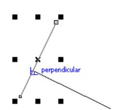

Сделать многоугольники ровными рекурсивными прямоугольниками :)
whiskydotjar / 06.09.2014, 14:19
Форум:
Версия программы:
16.1.0.843 (sp1)
Здравствуйте!
Отрисовываю карту -- дома, здания, постройки -- инструментом "кривая Безье". Очень просто обводить здания и получать многоугольники соот. домам... Но есть большая проблема: получаются довольно кривые объекты...
Взгляните на прикрепленное изображение.
Пытаюсь найти скрипт, который выравнивает узлы.
Может быть, проблему можно решить как-то проще?
Спасибо за внимание.
ммм ..
а в том же инструменте - где кривые безье - есть Smart Drawing - Shift+S
- на русском будет нечто умного или интеллектуального рисования - не пробовали?
Или полилайн polyline? там надо углы фиксировать четко
Dastin, это всё отличные инструменты, но которые к сожалению оставляют проблему открытой...
Спасибо за ответ.
прямоугольники так же можно рисовать через три точки соответствующим инструментом, оптимально рисовать "ломаной линией" с зажатым CTRL-ом
whiskydotjar, кроме подсказки, которую дал shark, можно просто включить динамические направляющие. Ведь здание - это прямоугольник (или объект с прямыми углами), а динамическая направляющая покажет вам угол в 90 градусов к данной линии. Включите привязку и все дела. К сожалению у Корела нет возможности штатными средствами рисовать перпендикуляры к любой наклонной линии. Для таких дел специально есть CorelDRAW Technical Suite.
1. Если отрисовываешь, попробуй повернуть исходник, подложку (с чего отрисовываешь) так, чтоб дома и здания можно было нарисовать обычным прямоугольником. Ну а потом, когда отрисуешь - поверни всё обратно))
2. Если не хочешь поворачивать и объекты прямоугольные - можно рисовать отрезками кривой, подбирая толщину линий, а затем это всё переводить в объекты. Я так дороги иногда рисую и изогнутые дома. Удобно))
Когда в свое время мне пришлось рисовать карту по снимкам с вертолета - я поступил проще - создал набор обьектов, которые просто подставлял на нужное место.
почему это - нет, включили привязку к объектам и -вуаля! 
shark, это хорошо работает, когда Вы рисуете линию перпендикулярно к существующей наклонной линии и к какой-то срединной точке на ней (т. е. точке на линии). А здесь задача рисовать перпендикуляр от конца наклонной линии. И тогда Вы не увидите никакой подсказки по поводу угла наклона (Строка состояния тут понятно тоже ничем не поможет). А вот в CorelDRAW Technical Suite перпендикуляр строится практически автоматом, независимо, конец это линии или какая-то точка на ней, к тому же сей перпендикуляр строится от линии, а не к ней.
а прямоугольник по 3 опорным точкам не поможет? (3-point rectangle tool)